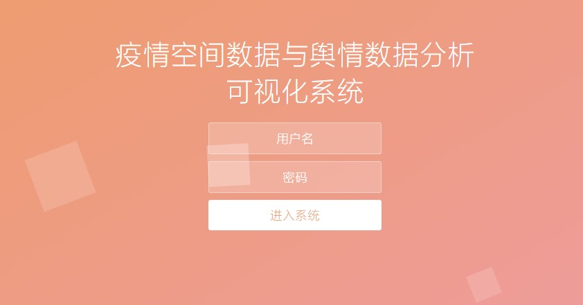
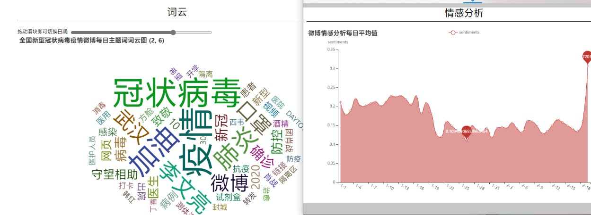

实习项目部分相关技术栈
JavaScript Html Css
pyEchart可视化
postgres sql数据分析
snownlp 自然语言情感分析
jieba分词
flask WEB框架
登陆界面
默认账号密码cppu, 给予系统安全的保护, 便于以后开发新增内部保密功能。

错误的密码尝试
我们也会将不速之客赶于门外
功能概览
所使用的数据集
疫情统计时空数据，分为国内各省市疫情统计数据及世界各国疫情统计数据，包括从1.19至5.19四个月时间的确诊人数、现存确诊人数、治愈人数、死亡人数等依据与“新冠肺炎”相关的230个主题关键词进行数据采集的微博数据 部分数据经爬虫采集，部分数据采用公开数据集；

功能实现
可视化部分采用pyecharts+flask实现动态交互，疫情数据动态交互可视化地图 共有三种地图类型：现存确诊率地图、累计死亡人数地图、死亡率（累计死亡人数/累计确诊人数）地图，可以通过下拉框进行选择； 可以拖动时间轴上的滑块改变地图显示日期

功能一/数据预览
使用前预览系统内的数据集

功能预览
详细了解整个系统的功能

功能二/空间态势感知
世界疫情分布图

世界疫情分布图
可调节的日期与选项
功能三/世界疫情实时展示
通过腾讯提供的API接口获取每日更新的疫情
获取到的JSON格式用JavaScript处理后高效率查询，并且传到后端利用pyechart绘制渲染
功能四/出行安全指数评测
通过将JSON数据存储在内存中，以列表的形式，一一对应前端选择，监听选择事件，返回结果到前端
按照当地疫情情况分为1-5星。并且每天更新疫情相关新闻，以ifrema的形式在左下角展示
功能五/趋势分析
将各国的疫情新增、死亡、治愈的最高值和最低值绘制出趋势图
并且添加了select标签可以选择世界各国
功能六/舆情数据
绘制了微博每日人均情感打分与日期的关系
并且带有slider控件的词云图，每次拖动会发送请求给flask后端

功能七/NLP训练模型（自然语言处理）
我们采用已经训练好的模型，weibo.marshal.3是训练好的微博评论语料模型
snownlp带入岂可分析出不同地区人评论的情感数据并生成CSV文件，我们可利用CSV数据可进行下一步的绘制可视化
功能八/地区分布情感折线图
我们在上一模块已经用语料模型生成了我们需要的各地区情感打分
我们在此功能模块下完成Pyechart的可视化图表绘制
并且，我们加入了切换条形图与下载功能
感谢老师评委们的观看，请批评指正。
下面我们分别运行软件的前端和后端